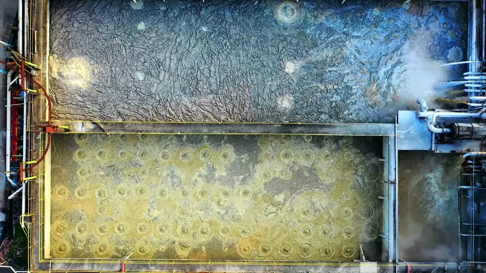

Orbital Ecology
Superintelligence for living systems.
Soft sensing and optimisation for biochemical processes. We read the state a closed living system will not report, and simulate it forward.
The thesis
Make complex living systems reliable enough to become infrastructure.
One run, start to finish
Capacity was 44 percent gone before the gauge moved at all.
Output from the production estimator on a synthetic recirculating-salmon log. The live demo runs the same engine in your browser.
Those figures come from a synthetic log built to be legible. On real commercial operating history the same method reproduced 6.5 hours of usable lead ahead of the event. See the validation record →
The problem
A gauge measures a consequence.
By the time a reading crosses its limit, the biological reserve that would have let an operator act is already spent. The state moves for days. The gauge moves in an hour. Everything expensive happens in the gap.

of stock lost in a single night at a land-based farm after circulation pumps stopped and oxygen fell in two tanks.
Proximar Seafood · June 2025
of stock lost when one carbon dioxide filter failed structurally, about a fifth of the site.
Sustainable Blue · November 2023
of plant electricity spent on aeration in conventional activated sludge, set conservatively because nobody measures nitrifier state.
Drewnowski et al. · 2019
The method
Three steps. Only the first one changes.
Write the biology down
A mechanistic model of the system: reaction kinetics, transport, uptake, population dynamics. This is the only step that differs between an oyster hatchery and a habitat, and it is where the domain work lives.
Solve backwards
Bayesian state estimation runs that model against the sensors already installed and recovers the state variables no instrument reports, with an uncertainty band, every cycle.
Integrate forward
Push the recovered state ahead in time under the planned operating strategy. The warning hours come from here. The output is a forecast with a stated confidence, not an alarm.
The products
One engine. Seven front doors.
An aquaculture operator should be able to buy an aquaculture product, not a space product. The markets differ. The estimator underneath does not.

The arc
From the mud to the moon, it is the same inverse problem.
A wastewater reactor, a fermenter, a fish farm and a sealed habitat are the same object seen at different scales: a closed loop of living chemistry, instrumented at the edges, failing from the inside. Solve the state estimation problem once and the domains become a sequence rather than a portfolio.
Water and protein
Aquaculture and bioremediation, where the failures are expensive and the sensors are already in the tank.
Controlled agriculture
Glasshouse and vertical systems, where crop state is inferred from the environment the plant actually experienced.
Biomanufacturing
Fermentation and cell culture, where the assay is sparse and the yield decision is made between measurements.
Life support
A closed loop with no resupply and no exit. The hardest version of the same problem, and the reason to solve it properly.
The record
What has been tested, and against what.
Every completed result here is reproducible. The aquaculture figure is a held-out backtest on real commercial operating history. The rest run against the reference models these fields already use to evaluate control strategies, so anyone can check the work.
| Status | Benchmark | What was tested | Result |
|---|
The team
Three founders, three parts of the problem.
Chief Executive Officer
Cameron Souza
Modelling, biogeochemistry and aquaculture. Owns the engine and the science, and wrote the domain models behind each product.
Co-founder
Zachary Cowden
Biology and industry. Previously at Leidos, working on biomanufacturing for space. Runs the bioprocess, digestion and life support domains.
Co-founder
Bernard Yong
Markets and operations. Previously at AWS, a lawyer by training, and a former adviser on UN policy. Runs commercial structure, channel and the legal interface.
Evaluation
Send one export. We will tell you what it was trying to say.
You send a historical export. We run it blind with the outcome window withheld, then report how many hours of warning the engine would have given and how often it would have been wrong on that same history.
- No connection to any live system. No change to any control loop.
- No fee, and the file is deleted afterwards.
- You keep the full workings, including where we would have missed.

Validated against the reference models these fields use, and backtested on real commercial operating history. The engine is read-only by design: it estimates and forecasts, and changes nothing in your plant.